世界の葉巻ニュース 特集
特集 — スティーブ・サカ
このシリーズで何度も名前の出てきた葉巻があります。リガ・プリバーダ No.9。太いコネチカット・ブロードリーフのラッパーで世界の葉巻の景色を変えた、あの一本です。それを作った男が、今回の主人公 スティーブ・サカ。
彼は ドリュー・エステート の社長から CEO に上り詰めた経営者であり、同時に自ら葉を組み立てるブレンダーでした。ところが2013年、頂点にいた彼は会社を辞めます。2年間の競業避止を静かに待ち、人口3,000人ほどのニューハンプシャーの町の名を冠した小さな家族会社 ダンバートン・タバコ＆トラスト を興しました。自社工場は持ちません。生産は、第3弾の舞台だったニカラグアの ホヤ・デ・ニカラグア など、他人の工場に託します。

彼の会社には、もう一つの異例があります。業界最大の評価誌 Cigar Aficionado が、彼の葉巻を採点しないのです。それでも彼のラインは、複数の評価誌の合算ランキングで毎年のように最上位に居続けます。本特集では、海軍の水兵だった青年がネットメディアの先駆者となり、大手小売で修業し、ドリュー・エステートの頂点に立って辞め、妥協なき実験室を作るまでの道を辿り、CA との「採点しない」合意の経緯を本人の開示で検証し、最後に日本での流通と価格を報告します。
本特集の事実関係は、専門誌・業界誌（Halfwheel、Cigar Aficionado、Cigar Coop、Cigar Dojo、Smoke Inn、Smokingpipes 公式記事）、ブランド公式サイト（Dunbarton Tobacco & Trust）、本人の発言・公開書簡・SNSでの開示で裏取りした範囲に基づきます。帰属が語り手によって揺れる逸話（リガ・プリバーダやアンダークラウンの生まれ方）は、本人の主張と第三者の裏付けを分けて記しました。裏の取れない数値や生年などは採用していません。日本国内の価格・販売状況は、当編集部が財務省の認可リストと国内販売店の掲載を照合した日本葉巻データベース（2026年11月11日時点）に基づきます。米国価格は当時の公表価格で、円換算は $1＝¥160 で計算しました。
◆ 一、海軍とネットの夜明け ― 1984年の一服
スティーブ・サカ の葉巻人生は、1984年に始まります。米海軍に在役していた頃に葉巻を覚えた、と Cigar Aficionado は記します。水兵の娯楽だった一服が、やがて生涯の仕事になりました。
彼が業界の表舞台に現れたのは、インターネットの夜明けでした。1996年、最初期のオンライン葉巻メディアの一つ CigarNexus の編集長に就きます。まだ葉巻雑誌が紙の時代だった頃に、ネット上でニュースと批評を編んだ世代です。メーカー公式の人物紹介は、彼を「オンラインメディア分野の先駆者（forefather）」と呼びます。2000年まで、彼は葉巻について精力的に書き続けました。
批評家としての彼の筆は、遠慮のないことで知られました。美味いものは美味い、駄目なものは駄目。その率直さが読者を得る一方で、後に業界最大の評価誌の発行人との間に深い溝を作ることにもなります。その話は、検証の章で改めて扱います。
◆ 二、小売の帝王の下で ― JRシガーの4年
2000年、サカは筆を置き、ビジネスの側へ回ります。通販とカタログ販売で巨大な小売帝国を築いた JRシガー のオーナー、ルー・ロスマン の下で、エグゼクティブ・コンサルタントとして4年間働いたのです。
この4年は、彼の後の仕事の土台になりました。作り手の論理ではなく、売り場と買い手の論理を知る。どの葉巻が、誰に、なぜ売れるのか。カタログの文面一つで数字が動く世界を、彼は内側から見ました。ブレンダーの技術と小売の現実感覚。その両方を持つ人間は、当時の業界にも多くありませんでした。
◆ 三、リガ・プリバーダを作った男 ― ドリュー・エステートの頂点へ
2005年、サカは ドリュー・エステート の社長に就任します。インフュージョン（香料漬け）葉巻で急成長した同社は、伝統的なプレミアム葉巻の世界では新参者でした。その会社で彼が手がけたのが、今日まで続く看板 リガ・プリバーダ です。
始まりは私的なものでした。本人の説明によれば、プロジェクトは2005年の夏、「自分のための葉巻」として始まります。サカと ジョナサン・ドリュー、ニコラス・メリーロ らが50種を超えるブレンドを試作し、土台ブレンド「#9」（正式な符丁は #9-A2X）が最終形になりました。2006年7月の見本市 RTDA で初公開され、2007年、6×52のパレホ1サイズ、48本入りキャビネットで商業発売されます。ストークカット（茎ごと刈る収穫法）のコネチカット・ブロードリーフのラッパー、ブラジル産マタフィナのバインダー、ニカラグアとホンジュラスのフィラー。その濃密な味は、ブロードリーフ再評価の時代を切り開きました。
No.9 を作った三人の役割は、はっきり分かれていました。企画と最終判断はサカ。創業者は ジョナサン・ドリュー。そして葉と工場を担ったのが、もう一人の当事者 ニコラス・メリーロ です。入社当初の仕事は葉の買い付けと発酵の監督。やがて Director of Tobaccos & Production（葉・生産ディレクター）としてラ・グラン・ファブリカの生産実務を握り、試作を「巻ける形」に落とし込む実装の人でした。そのメリーロは2014年にドリューを去ります。スウィッシャー による買収の際に小口株主としての持分を買い取らせると、その資金で ファウンデーション・シガー を全額自己資金で興しました。エル・グエグエンセ に ワイズマン――歴史の物語を名に背負う彼の葉巻は、Cigar Aficionado 年間 Top 25 の常連となります。サカとは別の道を歩んだ、もう一人の卒業生。その物語は、また別の回に譲ります。
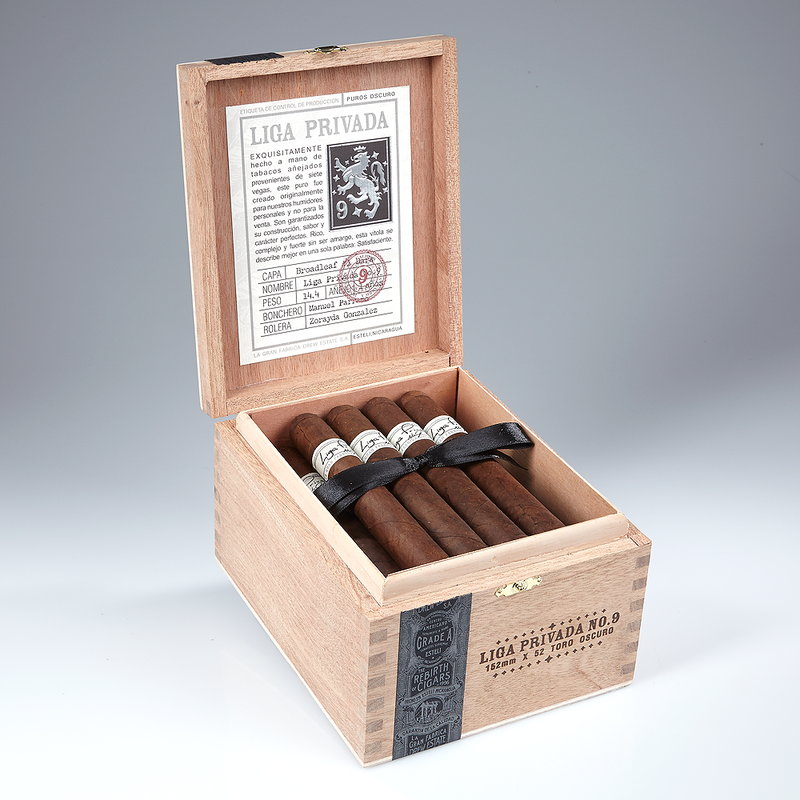
2009年には姉妹作 T52 が続きます。ストークカットのコネチカット・ハバノ種のラッパーを掲げた一本で、Cigar Coop の2009年 Cigar of the Year に選ばれました。そして2011年の アンダークラウン には、このシリーズ屈指の生まれの物語があります。工場のトルセドール（巻き手）たちがリガ・プリバーダを愛するあまり自家消費が増え、会社が喫煙を控えるよう求めた。すると巻き手たちは、自分たちのために似た性格のブレンドを自作し始めた――それが原型だといいます。サカと彼のチームが手を入れて製品化し、2011年9月に出荷されました。サカ自身の位置づけは鮮やかです。リガ・プリバーダは「王（ボス）のため」、アンダークラウンは「王子たち（巻き手たち）のため」。なお、変わった形状の フライング・ピッグ は、サカが1895年のカタログで見た形状に由来すると伝えられます。
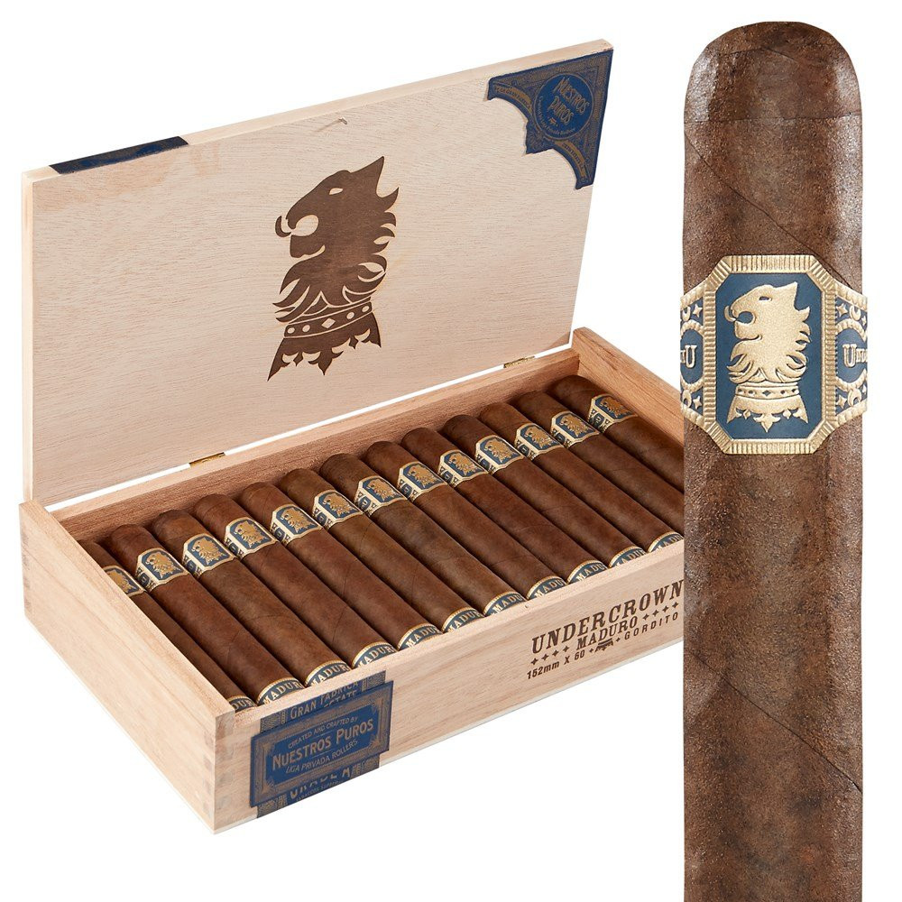
◆ 四、CEOを捨てる ― 2013年7月11日
2013年、サカはドリュー・エステートを辞任します。最終勤務日は7月11日。見本市 IPCPR の直前の発表でした。Halfwheel と Cigar Aficionado の双方が、退社は円満なもので、彼の保有分は会社が買い取ったと報じています。追い出されたのでも、喧嘩別れでもない。自ら降りたのです。
彼を縛ったのは、2年間の競業避止（ノンコンピート）でした。満了は2015年6月19日。その間、彼は葉巻を作れません。公式サイトに公開した手紙の中で、彼はその心境を「ライオンの尻尾よりネズミの頭」という趣旨の言葉で表したとされます。巨大企業の幹部であるより、小さくても自分の王国の主でありたい――その選択の代償が、2年の沈黙でした。
サカの辞任をめぐっては、「ドリュー・エステートが大手に買収され、彼は居場所を失った」という語られ方が流布しています。しかし時系列が合いません。ドリュー・エステートを買収したのは スウィッシャー で、その買収は2014年。サカの辞任は2013年です。買収は、彼が去った後の出来事でした。「買収で追われた」のではなく、「頂点にいた男が、自分から降りた」。ここを取り違えると、この特集の主題そのものが崩れます。なお、AI生成とみられるファンサイトには「CEOを18年務めた」「買収の後に辞任した」等の誤った記述も見られます。数字は、一次報道に当たるのが鉄則です。
沈黙の2年が明ける2015年6月、Halfwheel が新会社の名を報じます。ダンバートン・タバコ＆トラスト。葉巻の世界への、王の帰還ならぬ「ネズミの頭」の帰還でした。
◆ 五、人口3,000人の町の「信託会社」 ― ソブレメーサの長い助走
新会社の本拠は、ニューハンプシャー州の小さな町ダンバートン。人口は3,000人ほどで、サカは妻 シンディ と共にそこに暮らします。シンディは会社のパートナーでもあります。社名の後半「トラスト（Trust）」の由来を、彼は Cigar Aficionado の姉妹誌 Cigar Insider にこう説明しました。本社のために、20世紀初頭に建てられた銀行の建物を買いかけたことがあるのだ、と。葉巻会社の名に銀行の面影が残ったのは、その名残です。
デビュー作の名は ソブレメーサ（Sobremesa）。彼自身の定義によれば、食事を終えても席を立たず、家族や友人と語らい、飲み、吸いながら過ごす、食卓の余韻の時間です。米国にはこの文化自体がないから、ぴったりの英訳がないのだといいます。
その一本に、彼は異常なまでの手間をかけました。ブレンドは27回以上の改訂を重ね、試した葉は40種を超えます。ラッパーはエクアドルの農園ラ・メカ産ハバノの最上級ロサード。バインダーはメキシコ・マタカパンのネグロ。フィラーは5種で、ニカラグアの4種に、ペンシルベニア州ランカスター郡産ブロードリーフのリヘロを潜ませる――米国の葉を芯に使う、批評家あがりのブレンダーらしい仕掛けでした。製造は、ニカラグアの ホヤ・デ・ニカラグア。ドリュー時代に米国の買い手として付き合った相手の工場です。ホヤの アレハンドロ・マルティネス・クエンカ は、当時をこう振り返っています。「サカと初めて会ったのは2007年、米国流通契約の草案を交渉していた時だった。彼はジョナサン・ドリューの隣に座っていた。手強い交渉相手に見えたが、実際その通りだった！」
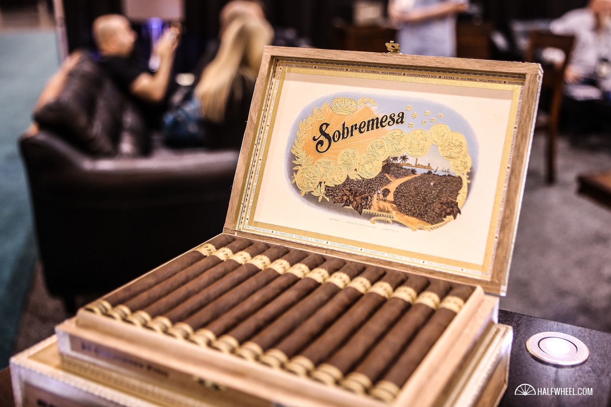
2015年の見本市での発表は、異例ずくめでした。保存状態への懸念から、来場者に試喫はさせない。正式な受注も受けない。小売店には代わりにリガ・プリバーダを示し、買う意思だけを確認する――品物を見せず、吸わせず、それでも小売店が列を作る。Halfwheel はその光景を、サカへの信頼の可視化だと記しました。
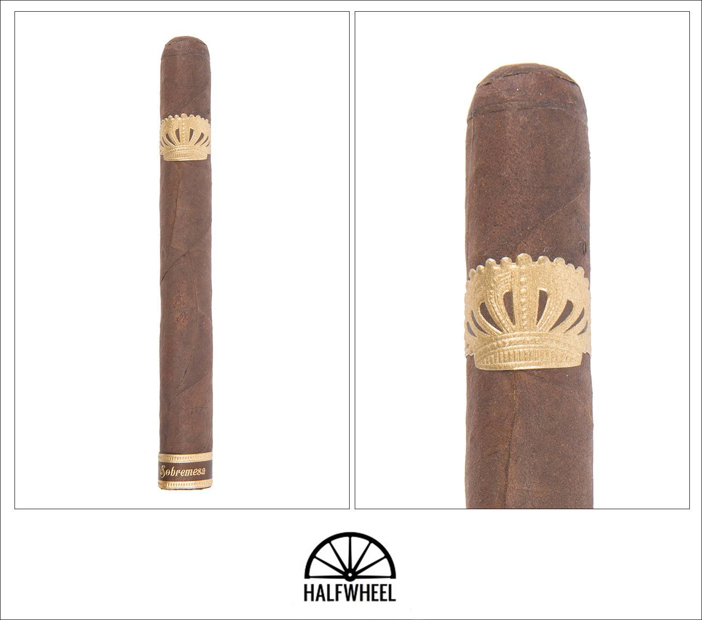
◆ 六、妥協なき実験室 ― 待たせる男のラインたち
会社の標語は「Puros Sin Compromiso（妥協なき葉巻）」。公式サイトは「私たちの固く守る精神を、たった3語で言い表したもの」と説明します。この標語が最も露骨に現れたのが、看板ライン シン・コンプロミーソ です。
その名は、会社発足の2015年6月には商標出願で知られていました。ところが出荷は2018年9月。実に約3年半を要しました。当時サカ自身が「全く準備ができていない」と公言し、葉の買い付けを始めたばかりだったといいます。完成した一本のラッパーは、メキシコ・サンアンドレス・ネグロの「Cultivo Tonto（愚かな栽培）」。日本の果物農家の手法に着想を得て、株の下葉を落とし、養分を上部の葉に集中させる栽培法です。彼は発表文で「メキシコ、エクアドル、ニカラグアでの、3年を超える実験的な黒葉の収穫の成果」と述べました。セレクシオン No.2 は Halfwheel で92点、同誌の2018年 Top 25 で第9位。5サイズ、$15.95（約¥2,550）〜$18.45（約¥2,950）で出荷されました。後に加わった パラディン・デ・サカ も91点を記録しています。
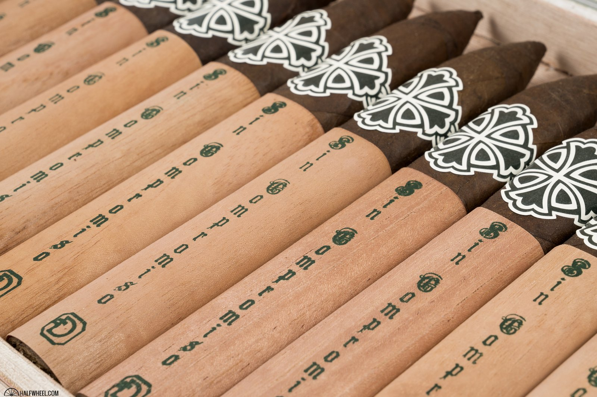
「妥協しない」は、止める判断にも現れます。ニカラグア・プーロの トドス・ラス・ディアス は、2021年半ばに生産を休止しました。理由をメーカー自身が公式商品ページに明記しています――特定のフィラー葉の品質が基準に届かなかったため。発酵中の現行の収穫が整えば、2026年後半の再開を望む、とも。その後このラインは、休止・廃番品を限定復活させる Archive Series の形でのみ姿を見せています。2026年には太い ダブル・ワイド が「LIMITED EDITION（限定版）」の明示つきで復活しました。売れる看板を、葉の都合で止める。それが彼の「妥協なき」の実物です。
実験室のラインは、他人の手も借ります。2016年の ミ・ケリーダ は NACSA 工場で、工場長格の ラウル・ディスラ の監督の下、サカの指示で作られました。名は直訳すれば「最愛の人」、しかしニカラグアでは「秘密の愛人」の意味で使われる言葉です。赤いバンドの派生 トリキ・トラカ を経て、黒い愛人も生まれました。母体は2021年、大手小売 JRシガーの50周年記念に作られた店舗限定の一本。それが翌2022年、限定ライン ミ・ケリーダ・ブラック の初出サイズ サカカーン（7.25×54）として帰ってきます。サカカーンとは、海軍時代の彼の渾名でした。2023年には パパサカ（5.63×48、3,500箱の限定）と、1本 $100（約¥16,000）のディアデマス ユニコーン が加わりました。実験ライン ムエストラ・デ・サカ は「1サイズ＝1ブレンド」の見本市。その一篇 アンストールン・ヴェイラー は、サカがディスラに「自分のブレンドで勝負してみろ」と挑み、彼が生んだブレンド群から最良の一つを選んだ異色作で、製造も NACSA です。全10作すべてが極少量の限定生産で、$100 の ユニコーン、幻のランセロ #NLMTHA、編み葉巻（クエブラ）の新作までが並びます。そして2025年、彼が「自分が普段吸う11本」を選んだ限定サンプラー Deep Cuts の中で、新ブレンド ワード・オブ・サカ がデビューしました。ほかにも、端材を活かす ポルペッタ、肉料理に合わせる レッド・ミート・ラバーズ、パイプ葉を使う異端の スティルウェル・スター、束売りの実力派 ウンバゴグ と、実験室の引き出しは増え続けています。
その引き出しの中でも異色なのが、パイプ葉を組み込んだ スティルウェル・スター です。相手は、オンライン小売 Smokingpipes を傘下に持つ Laudisi グループのパイプ葉ブランド Cornell & Diehl（コーネル＆ディール）。このラインは、ダンバートンと同社の「共同開発」として生まれました。実はサカは、数十年にわたるパイプ喫煙者でもあったのです。発端は2020年の展示会 TPE。彼は Smokingpipes の シェーン・アイルランド（現・同社小売部門VP）と、Laudisi の実店舗 Low Country のマネージャーだった ティム・バンダープール に、そのことを打ち明けました。2人が引き合わせたのが、同社のヘッドブレンダー ジェレミー・リーブス。フィラーに使うパイプ葉（ブラック・キャベンディッシュ、バージニア、バーレー、ラタキアなど）は Cornell & Diehl 製で、巻き上げはホヤの工場。試作は500本に及びました。そして2021年11月5日、この葉巻は Smokingpipes と実店舗 Low Country でのみ先行発売されます。ダンバートンの全国向け新製品が、単一の小売で独占的にローンチされた初めてのケースでした。ダンバートンの発売時リリースには、Cornell & Diehl はパイプ葉の供給者であり、このラインの売上から追加のロイヤルティを受け取らない、と明記されています。名前を貸すライセンス商売ではなく、葉と腕を持ち寄る協働――それが、この「境界実験」の実像です。2021年の4ブレンドで始まったラインは、年次限定の Holiday 版を挟み、2026年には3ブレンドへの再編・改訂版として続いています。
「葉巻一筋の頑固者」――それがサカの通り名でした。ところが2020年、展示会 TPE の会場で、彼は思いがけない告白をします。相手は、Smokingpipes のシェーン・アイルランドと、実店舗 Low Country のティム・バンダープール。「実は自分は、数十年、隠れパイプ喫煙者だった」。葉巻の世界の重鎮が、パイプの愛好家でもあったのです。2人は即座に、Cornell & Diehl のヘッドブレンダー、ジェレミー・リーブスを引き合わせました。数百種のパイプ葉のサンプルと、試作を重ねる日々の始まりです。2021年11月の発売日には、Low Country の店頭にサカ本人が立つ、チケット制のローンチイベントも開かれました。頑固者の「もう一つの顔」が、5年続く共同事業の種になったのです。
業界での彼の渾名は、サカスクワッチ（Sakasquatch）、パパサカ（PapaSaka）、そしてニカラグアの人々からは「エル・グリンゴ・グルニョン（不機嫌なグリンゴ）」。海軍時代の渾名サカカーン（SakaKhan）も残ります。大柄な体躯と、白い顎鬚と、SNSでの歯に衣着せない物言い。葉巻メディア Cigar Dojo は、2023年の「パーソン・オブ・ザ・イヤー」に彼を、「ブランド・オブ・ザ・イヤー」にダンバートンを選びました。批評家として業界を見ていた男が、今度は業界の「顔」として選ばれる側になったのです。
ダンバートンの葉巻は、Cigar Aficionado の Top 25 に載りません。これは「落選」ではありません。採点の対象外なのです。2025年12月19日、サカは自らの Facebook で経緯を開示しました。彼と同誌のオーナー／発行人との関係は1990年代半ば以来「しっくりいっていない（less than cordial）」。そしてダンバートン創業の際、個人的な敬意から双方が合意し、CA はダンバートンの葉巻をレビュー・採点しないことになった――だから Top 25 の選考対象にもならない、というのです。同時に彼は、これは同誌のスタッフや編集基準への批判ではないと明言し、その年の選出作に海軍式の祝意「Bravo Zulu（よくやった）」を送っています。1990年代に批評家として筆を振るった男と、評価誌の頂点との、30年に及ぶ距離の置き方でした。
この事情を知らないと、誤情報に足をすくわれます。ネット上には「ソブレメーサ・ショートチャーチル が Cigar Aficionado の2019年 Cigar of the Year 第1位・97点」という記述が流通していますが、これは誤りです。CA の2019年第1位は エイジングルーム・クアトロ・ニカラグア・マエストロ の96点であり、そもそもダンバートンは同誌の採点対象外です。代わりに見るべき物差しは、複数誌の合算ランキング（The Consensus）でしょう。ダンバートン公式は「全てのコア・リガが The Consensus の Top 25 で Top 5 入りを9年連続果たし、1位を3回獲った唯一の会社」「Halfwheel の Consensus で Company of the Year を過去7年で6回」と掲げています（会社側の自己申告として、その旨を明記して紹介します）。採点されない男の葉巻が、合算の頂点に居続ける。この逆説こそ、彼の現在地です。
◆ 七、ホヤとの三重の接点 ― 交渉相手が、作り手になり、届け手になった
サカと ホヤ・デ・ニカラグア の関係は、三重にねじれています。第一の接点は2007年。ドリュー・エステートの社長として、彼はホヤの米国流通をめぐる交渉の席に座りました。第二の接点は、その流通そのものです。2008年4月25日、ドリュー・エステートはホヤの米国流通を引き継ぎます（それ以前は SAG が担当）。つまりサカは、ホヤの葉巻を米国に売る側の責任者でもあったのです。
第三の接点が、ダンバートンです。交渉相手だった工場に、今度は自分の葉巻の製造を託す。ソブレメーサも、シン・コンプロミーソも、トドス・ラス・ディアスも、ホヤの工場から生まれました。そして2025年、舞台はもう一度動きます。ホヤの米国流通がドリュー・エステートから離れることが同年9月に発表され、2026年1月1日からは、マルティネス家とケサーダ家の合弁として復活する SAG インポーツ が担うことになりました。ドリューとホヤは「流通の離婚」をした。しかしサカの生産は、ホヤに残ったままです。

その象徴が、2025年1月に発売された オーバーシーズ No.1 です。ダンバートン初の国際市場専用ラインで、製造も米国外の流通もホヤが担います。6×50のトロ、エクアドル・ハバノのラッパー。Halfwheel の評価は88点でした。米国の自国市場では小ロットの実験作を次々出せるのに、海外のファンには届けられない――その歯がゆさから生まれた、米国外専用のブランドだとサカは説明します。かつて交渉の席で向かい合った相手が、作り手になり、届け手になった。三重の接点は、今もほどけていません。
◆ 日本編 ― 「秘密の愛人」は、まだ海を渡っていない
日本でのダンバートンの景色は、厚みと偏りが同居しています。当編集部の日本葉巻データベースでは、ダンバートン関連は全29品目（ダンバートン名義27品目＋関連2品目）。そのうち21品目が国内販売を確認済みです。窓口は、はっきりしています。日本の代理店は、東京・西日暮里の ヒロミエンタープライズ さん（パドロンの日本総代理店としても知られる会社）で、2023年5月に ソブレメーサ と シン・コンプロミーソ の販売を始めました。同社のオンラインショップでは通販もでき、小売では 大越酒店 さんで販売を確認しています。価格は財務省の認可定価とほぼ一致しています。
顔ぶれの中心は、デビュー作の家系です。販売確認21品目のうち12品目が ソブレメーサ と、その甘い姉妹ライン ソブレメーサ・ブリュレ の一族。看板の シン・コンプロミーソ も5サイズに パラディン・デ・サカ を加えて揃います。そして面白い逆転が、オーバーシーズ No.1（大越酒店さんで¥3,360）です。米国では販売されない国際専用ラインが、日本では普通に棚に並ぶ。米国のファンが羨む側に、日本の買い手が立つ珍しい構図になっています。
| 品目 | 国内価格 | 販売店 | 備考 |
|---|---|---|---|
| ソブレメーサ・セルバンテス・フィノ | ¥2,400 | 大越酒店 さん／ヒロミエンタープライズ さん（通販） | デビュー作の細身の一本 |
| ソブレメーサ・ロブスト・ラルゴ | ¥2,600 | 大越酒店 さん／ヒロミエンタープライズ さん（通販） | |
| ソブレメーサ・ショートチャーチル | ¥2,500 | 大越酒店 さん／ヒロミエンタープライズ さん（通販） | 「CA 2019年第1位」は誤情報（検証欄参照） |
| ソブレメーサ・エル・アメリカーノ | ¥2,700 | 大越酒店 さん／ヒロミエンタープライズ さん（通販） | |
| ソブレメーサ・グラン・インペリアレス | ¥3,000 | 大越酒店 さん／ヒロミエンタープライズ さん（通販） | |
| ソブレメーサ・エレガンテ・エン・セドロス | ¥3,100 | 大越酒店 さん／ヒロミエンタープライズ さん（通販） | 杉のスリーブ入り |
| ソブレメーサ・ブリュレ・ロブスト 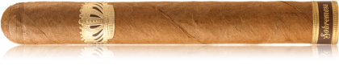 | ¥2,800 | 大越酒店 さん／ヒロミエンタープライズ さん（通販） | 甘口に振った姉妹ライン |
| ソブレメーサ・ブリュレ・トロ | ¥3,000 | 大越酒店 さん／ヒロミエンタープライズ さん（通販） | |
| ソブレメーサ・ブリュレ・ゴード | ¥3,300 | 大越酒店 さん／ヒロミエンタープライズ さん（通販） | |
| ソブレメーサ・ブリュレ・ダブルコロナ | ¥4,000 | 大越酒店 さん／ヒロミエンタープライズ さん（通販） | ブリュレ最大のサイズ |
| ソブレメーサ・ブリュレ・ブルー・グランコロナ | ¥3,400 | 大越酒店 さん／ヒロミエンタープライズ さん（通販） | ブリュレの上位版「ブルー」 |
| ソブレメーサ・ブリュレ「ワガシ」 | ¥3,900 | 大越酒店 さん／ヒロミエンタープライズ さん（通販） | 名は日本の「和菓子」から |
| シン・コンプロミーソ・セレクシオン・イントレピド | ¥3,800 | 大越酒店 さん／ヒロミエンタープライズ さん（通販） | |
| シン・コンプロミーソ・セレクシオン No.2 | ¥4,300 | 大越酒店 さん／ヒロミエンタープライズ さん（通販） | Halfwheel 92点 |
| シン・コンプロミーソ・セレクシオン No.5 | ¥4,400 | 大越酒店 さん／ヒロミエンタープライズ さん（通販） | |
| シン・コンプロミーソ・セレクシオン No.7 | ¥4,800 | 大越酒店 さん／ヒロミエンタープライズ さん（通販） | |
| シン・コンプロミーソ・セレクシオン・バリータ・マヒカ | ¥3,900 | 大越酒店 さん／ヒロミエンタープライズ さん（通販） | 細身のロングサイズ |
| シン・コンプロミーソ・パラディン・デ・サカ 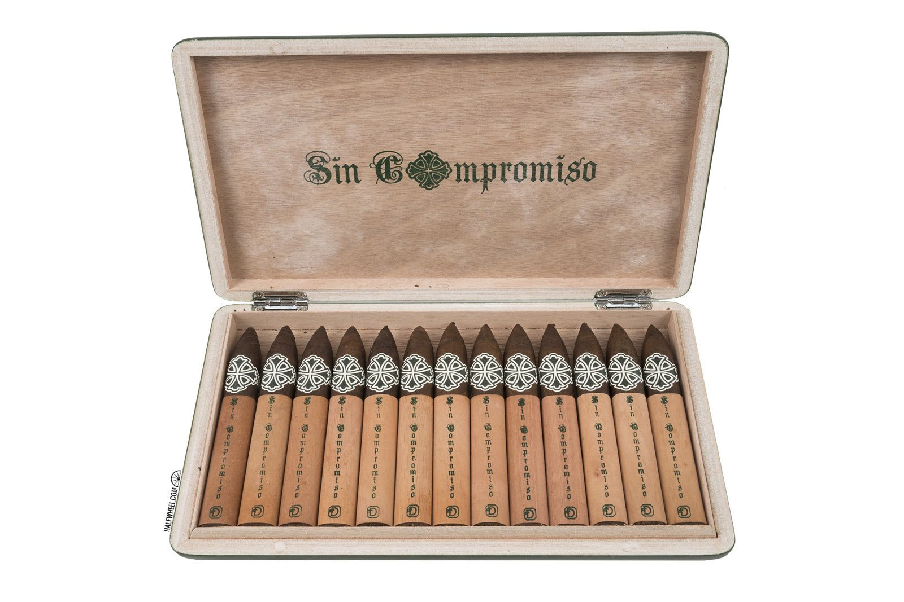 | ¥5,500 | 大越酒店 さん／ヒロミエンタープライズ さん（通販） | Halfwheel 91点。国内最上位価格 |
ムエストラ・デ・サカ ザ・ビウィッチド | ¥5,000 | 大越酒店 さん／ヒロミエンタープライズ さん（通販） | 実験ラインの一篇 |
| 10th ジュビリー | ¥5,000 | ヒロミエンタープライズ さん（通販） | 創業10周年記念。代理店の通販で販売を確認 |
| オーバーシーズ No.1 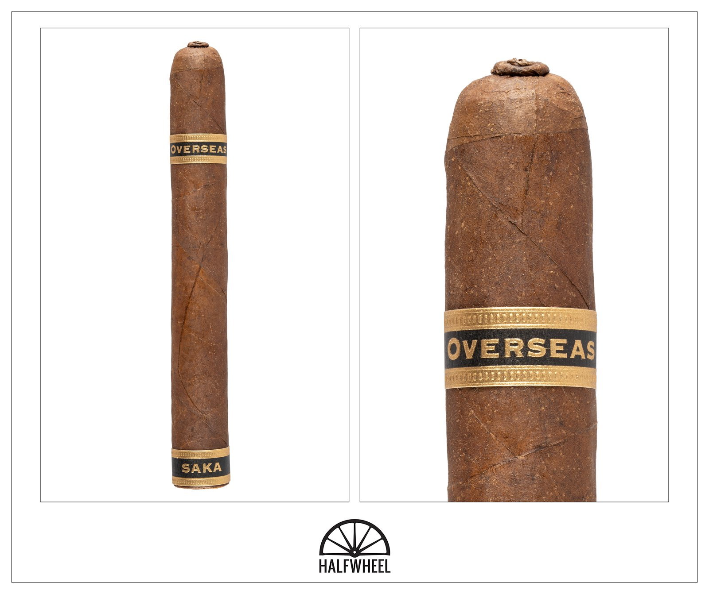 | ¥3,360 | 大越酒店 さん／ヒロミエンタープライズ さん（通販） | 米国では買えない国際専用ライン。認可定価は¥4,800で、代理店の通販でも同額 |
そして、日本編の締めは「まだ届いていない愛人」です。ミ・ケリーダ は、ブルー3サイズ・レッド3サイズの計6品目が2024年6月に認可まで下りていながら、データベース上はいまだ販売未確認。認可価格は ¥2,000〜¥2,200 と、彼のラインでは最も手頃な部類です。「秘密の愛人」は、まだ海を渡っていない。一方、10周年記念の 10th ジュビリー（認可 ¥5,000、2026年9月認可）は、代理店 ヒロミエンタープライズ さんのオンラインショップで販売が始まっていました。データベースの輸入元欄はいまだ「不明」のままですが、実際の窓口はこの代理店です。素性が曖昧だったのは、ブランドではなくデータの側でした。
◆ 九、ラインの系譜 ― 二つの会社の地図
| ライン（デビュー） | 製造 | ラッパー | 備考・評価 |
|---|---|---|---|
| リガ・プリバーダ No.9（2007） | ドリュー・エステート | コネチカット・ブロードリーフ | サカの出世作 「自分のための葉巻」が世界を変えた |
リガ・プリバーダ T52（2009） | ドリュー・エステート | コネチカット・ハバノ | Cigar Coop の2009年 Cigar of the Year |
| アンダークラウン（2011） | ドリュー・エステート | メキシコ・サンアンドレス | 巻き手たちの自家用ブレンドが原型 「王子たちのため」の一本 |
| ソブレメーサ・ソリータ（旧ソブレメーサ、2015） | ホヤ・デ・ニカラグア | エクアドル・ハバノ・ロサード | ダンバートンのデビュー作。ブレンド改訂27回、試作の葉40種超 2023年に現行名へ改名。姉妹ラインにブリュレ、派生にソリータ・レッド（2025）、新ライン タパ・ネグラ（2026） |
| ミ・ケリーダ（2016） 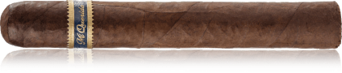 | NACSA | コネチカット・ブロードリーフ | 「秘密の愛人」。派生に赤バンドのトリキ・トラカ 日本は認可のみ・販売未確認 |
ミ・ケリーダ・ブラック（2021） | NACSA | コネチカット・ブロードリーフ No.1 Dark | 限定生産の「黒い愛人」。母体は JRシガー50周年記念の店舗限定 サカカーン（7.25×54、海軍時代の渾名）／パパサカ（限定3,500箱）／ユニコーン（$100） |
| トドス・ラス・ディアス 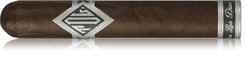 | ホヤ・デ・ニカラグア | ニカラグア（プーロ） | 2021年から葉の品質を理由に休止中 Archive Series で限定復活（ダブル・ワイド 2026 は LIMITED EDITION 明示） |
| シン・コンプロミーソ（2018） | ホヤ・デ・ニカラグア | メキシコ・サンアンドレス・ネグロ | 発表から出荷まで約3年半 No.2 が Halfwheel 92点・同誌2018年 Top 25 第9位 2025年、新ブレンド ワード・オブ・サカ が限定サンプラー Deep Cuts でデビュー |
ウンバゴグ | NACSA | コネチカット・ブロードリーフ | 束売りの実力派ライン 名はニューハンプシャーの湖から。派生にブロンズバック（2024、2LS ラッパー） |
| ムエストラ・デ・サカ 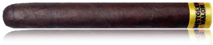 | ホヤ・デ・ニカラグア／NACSA | ブレンドごとに異なる | 1サイズ＝1ブレンドの実験ライン。全10作すべて限定生産 第1作エクスクルーシボ（2017）／ユニコーン（$100）／#NLMTHA／アンストールン・ヴェイラーはディスラのブレンド 2026年の新作に初のクエブラ レングア・デ・スエグラ |
| スティルウェル・スター 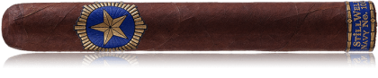 | ホヤ・デ・ニカラグア | パイプ葉 | Laudisi 傘下のパイプ葉ブランド Cornell & Diehl との共同開発 葉巻とパイプ葉の境界実験 2026年改訂：旧4ブレンドを廃し、甘いキャップの新3ブレンド×2サイズに再編。年次限定 Holiday シリーズも |
レッド・ミート・ラバーズ | ― | ― | ステーキに合わせる濃厚ライン 肉料理の店との縁から生まれた |
ポルペッタ | ― | ― | 端材を活かす「キューバンサンドイッチ」式 名はイタリアの肉団子 |
| #GFY ランセロ・コレクション（2024） 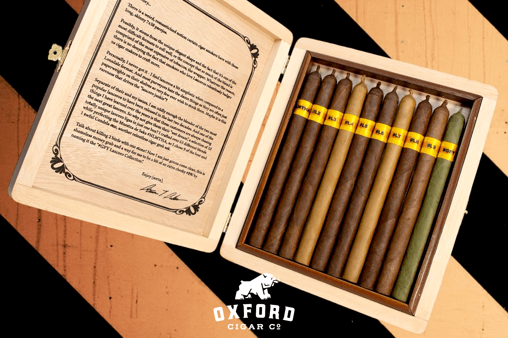 | ホヤ・デ・ニカラグア | 6種のラッパー | 7×38ランセロ10種の限定セット（4,150箱） ムエストラ #NLMTHA を再収録し、同社初のカンデラ葉も |
| オーバーシーズ No.1（2025） | ホヤ・デ・ニカラグア | エクアドル・ハバノ | 初の国際市場専用ライン、米国では販売なし Halfwheel 88点。日本でも販売確認済み |
Year of the Duque（2025） | ホヤ・デ・ニカラグア | エクアドル・ハバノ・ロサード | 干支の動物ではなく「人」を讃える年次限定シリーズの第1作 ホノルル在住の元警察官で、展示会ボランティアを務める長年のファン、クリス・デュークへの顕彰。2,000箱、Halfwheel 91点 |
| 10th ジュビリー（2026） | NACSA | エクアドル・スマトラ | 創業10周年記念作。Halfwheel 91点 日本でも代理店の通販で販売確認済み |
◆ 結び ― 採点されない男の、現在地
海軍の水兵は、ネットの批評家になり、小売の現場で学び、大会社の頂点に立って、自分から降りました。2年の沈黙の末に作ったのは、自社工場を持たない小さな家族会社。看板作は3年半待たせ、売れるラインは葉の品質ひとつで止め、最大の評価誌とは「採点しない」約束を交わす。それでも彼の葉巻は、合算ランキングの頂点に居続け、日本では米国のファンが買えない一本まで棚に並んでいます。
「ライオンの尻尾よりネズミの頭」。その言葉の意味は、10年を経た今の姿が証明しています。王国の大きさではなく、妥協しない範囲の広さで、彼は自分の国を守ってきたのです。
実は、本稿にはもう一本の縦糸が流れています。スティルウェル・スターの協働相手 Cornell & Diehl を傘下に持つ Laudisi Enterprises は2024年3月、Caldwell Cigar Co. と Lost & Found を買収しました。創業者のロバート・コールドウェルは、株主のままで副社長として会社に残っています。そして、サカの「告白」を受け止め、彼を Cornell & Diehl へつないだシェーン・アイルランドは、Smokingpipes の公式ヒストリーによれば、買収のはるか以前から、ロバートたちと夜を徹して葉巻とパイプを語り合う間柄でした。資本の縁を持たず、協働と人脈だけで Laudisi と結ばれたサカ。会社ごと、その傘下に入ったコールドウェル。同じ輪の中にいながら、正反対の場所に立つ2人です。
最後に、次回への橋を一つ。第9弾の結びで予告した少年――12歳でカリージョの工場に連れて行かれ、極太の一本を吸い切って葉巻に恋をした ロバート・コールドウェル の物語が、次回作になります。巨匠の工場で目覚めた少年が興したブランドと、その日本での知られざる窓口を追います。――その物語は、また次回。